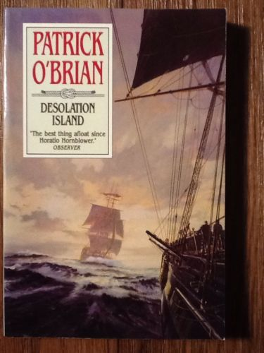
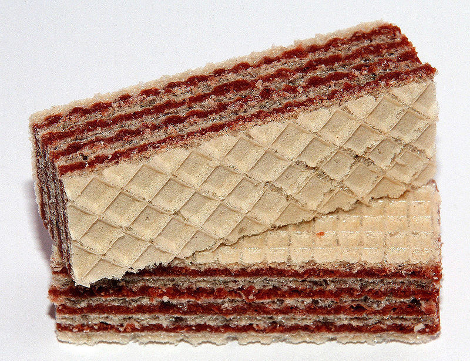
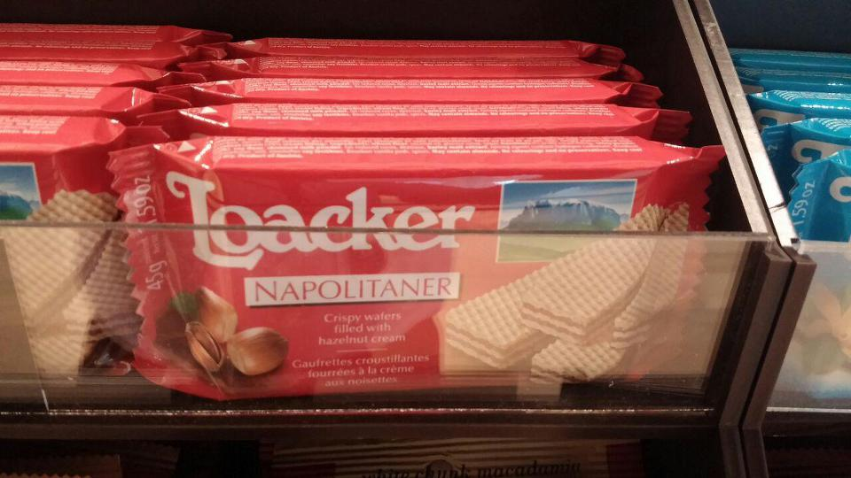
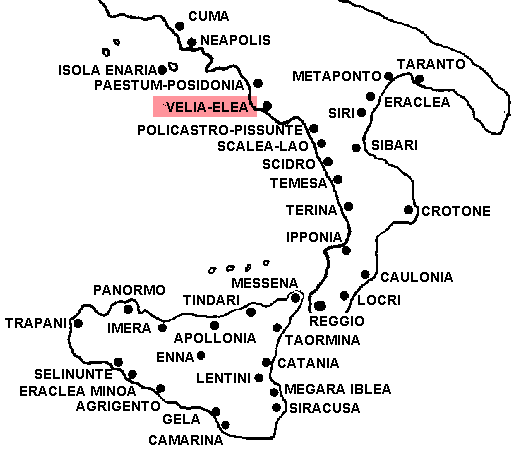
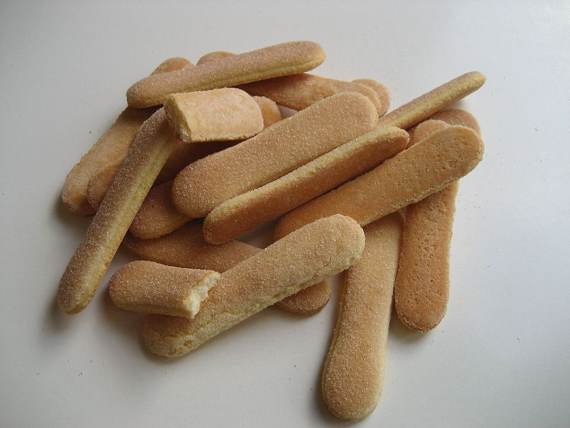
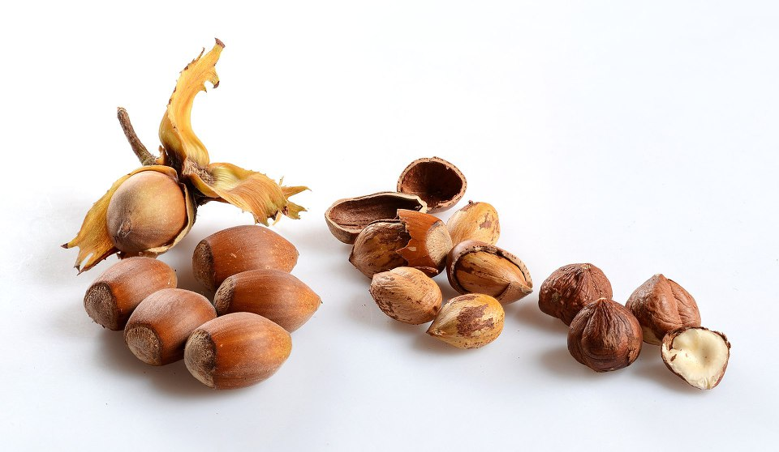
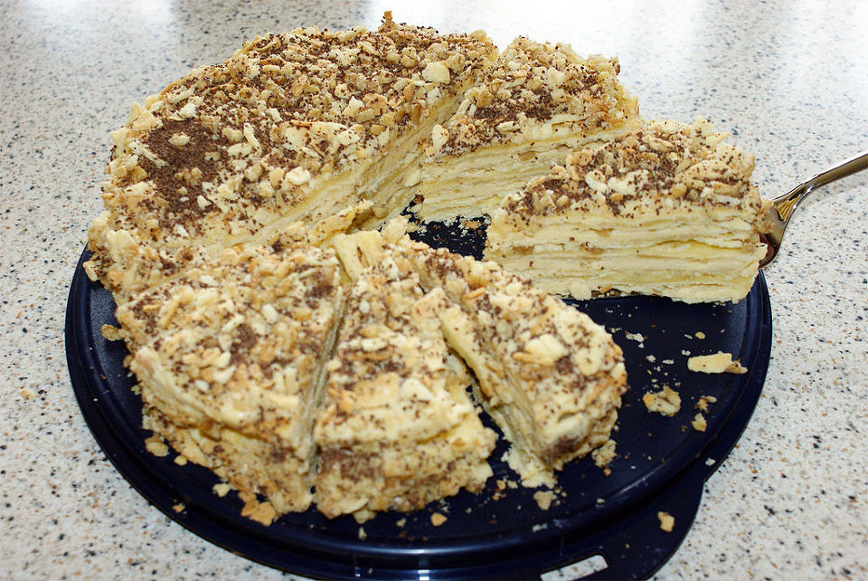

달콤한 착각 - 나폴리에서 온 과자 이야기
게시: 2018-09-27T06:30:00+09:00

Desolation Island by Patrick O'Brien (배경 : 1811년 HMS Leopard 함상) ------
(워건 부인은 군함 뱃바닥에 있는 영창에 갇혀 오스트레일리아의 유형지로 가는 신세입니다. 군의관인 머투어린이 이 여자를 검진합니다.)
"그렇게 절망하여 외톨이 노릇을 고집하시면 틀림없이 건강을 해치게 될 겁니다."
그녀는 미소를 쥐어짜 보이고는 말했다. "어쩌면 이건 그냥 나폴리 비스킷(Naples biscuits) 때문일거에요. 최소한 1천개는 먹었거든요."
"줄곧 나폴리 비스킷만 드셨다고요 ? 이 군함에서 식사를 제공하지 않던가요 ?"
"주긴 하지요. 곧 그런 식사도 맛있게 먹게 될 거라고 생각해요. 제가 불평한다고는 생각하지 말아주세요."
"제대로 된 식사를 하신 것이 언제였나요 ?"
"글쎄요, 정말 오래 전이긴 한데... 클라지스(Clarges) 가에서였을거에요."
머투어린은 그 클라지스 가에서 제대로 정신차린 사람이 있는 것 같지 않다고 생각하며 말했다. (클라지스 가에 살았던 유명 인사로는 넬슨 제독과 염문을 일으킨 레이디 해밀턴이 있습니다 - 역주) "나폴리 비스킷만 드셔가지고는... 아마 안색이 노랗게 된 이유가 거기에 있는 것 같습니다."
그는 주머니에서 말린 카탈로니아 소시지를 하나 꺼내어 수술용 메스로 끄트머리의 껍질을 벗겨내고는 말했다. "이젠 시장하신가요 ?"
"아 그럼요 ! 아마 바닷 바람 때문인가봐요."
----------------------------------------------------------------------
19세기 초 나폴레옹 전쟁 당시 영국 해군의 모습을 잘 그려낸 패트릭 오브라이언의 오브리-머투어린(Aubrey-Maturin) 시리즈에는 여러가지 음식 이야기가 나옵니다. 특히 그 배경 때문에 긴 항해 중에 선상에서 먹는 음식에 대한 묘사가 많습니다. 그 중 무척 독특한 것으로 인상에 남았던 것이 저 나폴리 비스킷(Naples biscuits)이라는 것이었습니다.
그러나 제 게으름 때문에 이 과자가 대체 어떤 것인지 또 무엇으로 만든 것이길래 긴 항해를 떠날 때 1천개 넘개 가져갈 정도로 보존성이 좋은지 찾아볼 생각을 못 했습니다. 그러다 최근에, 회사 내의 카페에서 커피가 나오기를 기다리다가, 카운터에 놓인 과자 포장지를 멍하니 보다가 Napolitaner라는 단어가 눈에 들어오더군요. 이 과자 이름을 보고 몇 년전에 읽었던 저 소설 구절이 떠올랐습니다. 혹시 그 과자가 이 웨하스 과자인가 ? 아니, 웨하스가 보존성이 좋은가 ??


(비싼 이탈리아제 웨하스라고 해서 뭐 딱히 더 맛있는 것은 아닌 것 같더라구요.)
실은 저 과자 이름을 보고 나서, 제가 몇 년 전에 읽은 저 나폴리 비스킷의 정확한 스펠링도 기억이 나지 않았습니다. 저는 Neapolitan biscuit으로 기억했더랬어요. 맨 처음 저 Neapolitan이라는 형용사를 보고는, 대체 저게 무슨 나라 이름인지 짐작을 못 했습니다. 제가 Sharpe 시리즈나 Hornblower 시리즈 등을 읽을 때, 모르는 단어가 하도 많아서 도저히 영어 사전을 일일이 뒤져 가면서 읽을 엄두를 내지 못했거든요. Naples는 딱 보고 아, 저게 나폴리의 영어식 표현이겠구나 라는 생각이 들었습니다만, Neapolitan이라는 것이 그 Naples의 형용사라는 생각은 전혀 들지 않았습니다.
나폴리의 역사에 대해 제가 좀 더 알았다면 저 Neapolitan이라는 단어가 Naples의 형용사라는 것을 금방 알아챘을 것입니다. 원래 나폴리(Napoli)라는 이탈리아어는 Neápolis (Νεάπολις)라는 헬라어/라틴어에서 나온 것으로서, 새로운 (nea-, neo-) 도시 (polis)라는 뜻입니다. 로마가 융성하기 전, 이탈리아 반도 남쪽에 진출했던 그리스인들이 세운 식민도시였거든요. 역설적으로, 현재 나폴리는 그 원래 이름과는 달리 현존하는 가장 오래된 도시 중 하나라고 합니다.

(귀찮으시더라도 이 그리스 식민도시들 중에서 나폴리를 찾아 BoA요)
(나폴리 항구의 모습입니다.)
이탈리아는 원래부터 남부와 북부 간의 빈부격차가 큰 나라였고, 그런 경향이 근래에는 더욱 커졌다고 하던데, 당연히 나폴리도 남부에 속하고 있고 또 경제적으로 많이 어렵다고 합니다. 그러나 나폴리는 로마 시대부터 경제 문화의 중심지로 매우 존중받는 도시였고, 그런 경향은 중세 이후 르네상스 시대가 되면서 더욱 커졌습니다. 15~17세기에 나폴리에서 왔다, 나폴리제다 라고 하면 굉장히 고급품이고 우아한 것으로 취급되었습니다. 영국에서도 선진 나폴리의 명성은 마찬가지였는데, 정말로 나폴리에서 온 것인지는 의심스럽지만 영국 튜더(Tudor) 왕조 시대부터 이미 '나폴리에서 온 비스킷'이라면서 유행한 과자가 바로 Naples biscuit이었습니다. 나폴리 비스킷의 레시피를 보면 그냥 우유와 설탕, 그리고 특히 계란을 많이 넣은 과자입니다. 계란 거품을 이용하여 부풀려 구웠기 때문에 과자 속에 공기가 많이 들어 있어 먹기에 훨씬 부드럽고 달콤했지요. 비슷한 시기에 유래된 비슷한 과자로 레이디핑거(Ladyfinger) 또는 사보이 비스킷(Savoy biscuit)이라고 불리는 것이 있는데, 이는 15세기 후반에 사보이 공작의 궁정을 방문한 프랑스 왕을 접대하기 위해 특별히 구워진 과자라고 하고, 그 과자 자체에 대한 묘사는 재료나 모양이 나폴리 비스킷과 똑같습니다. 아마 당시 많은 유럽 사람들에게는 나폴리나 사보이나 다 이탈리아의 잘 나가는 화려한 동네라고 생각되었기 때문에 나폴리 비스킷이라고 알려졌는지도 모르겠습니다.
그런데, 계란과 설탕을 많이 넣어 구운 비스킷이 보존성이 좋을까요 ? 특히 나폴리 비스킷에 대해 뒤지면서 약간 헷갈렸던 것이, '나폴리 비스킷은 레이디핑거 같은 것인데, 레이디핑거는 스폰지 케익이다' 라고 설명된 포스팅이 많더라고요. 대체 어떻게 스폰지 케익의 보존성이 좋을 수 있단 말인가요 ? 그런데도 이 나폴리 비스킷은 저 오브리-머투어린 소설 속에 나온 것처럼 보존성이 좋아서 좀 여유있는 승객들이 항해에 나설 때 꼭 챙겨가는 음식 중 하나였다고 합니다. 왜 그랬을까요 ? 한참을 고민하며 비스킷의 보존성에 대해 별의별 사이트를 뒤져 보았는데, 한참 만에야 그럴싸한 답을 아래 사이트에서 찾았습니다.
https://www.janeausten.co.uk/naples-bisket-or-sponge-cake/
여기서 인용된 유명 작가 제인 오스틴의 일기 중 하나가 있습니다. 제인이 언니인 카산드라에게 한 말입니다.
"스폰지 케익을 사는 것이 내게는 얼마나 흥미진진한 일인지 잘 알지 ?" (1808년 6월 15일 수요일)
여기서 말하는 스폰지 케익이라는 것은 요즘 우리가 흔히 먹는 부드러운 스폰지 케익과는 다소 다른 것이었다고 합니다. 당시 빵이나 과자를 부풀리기 위해서는 당연히 천연 이스트를 썼는데, 17세기 중반이 되면서 이스트 대신 계란 거품을 이용해서 과자를 부풀리는 요리 기법이 주류가 되었다고 합니다. 그렇게 계란 거품을 이용해 부풀린 과자류에도 당연히 기포 공간이 많아서 뻑뻑한 비스킷보다는 훨씬 부드러웠고, 그래서 그런 과자류를 스폰지 케익이라고 불렀다는군요. 다만, 이 시대의 스폰지 케익은 요즘의 스폰지 케익보다는 쿠키에 더 가까운 물건이었답니다. 생각해보면 당연한 것이, 아직 비닐 포장지도 없고 냉장고도 없는 시절에는 오래 두고 먹을 과자를 구우려면 바싹 구워 수분을 제거하는 것이 상식이었겠지요.

(이건 Ladyfingers의 사진입니다. 나폴리 비스킷의 모양새도 이와 크게 다르지 않았다고 합니다.)
결국, 당시 나폴리 비스킷이라는 것은 뻑뻑하고 맛없는 당시의 선원용 비스킷보다는 훨씬 부드럽고 맛있는 쿠키에 가까운 과자라서, 패스트리 같은 빵과자에 비하면 보존성이 좋아서 중산층 승객이 먼 항해에 나설 때 챙겨가지 딱 좋은 과자였다는 것이지요.
그렇다면 제게 이 포스팅을 올리게 한 저 Napolitaner라는 웨하스는 나폴리 비스킷과는 어떤 관계가 있는 물건일까요 ? 결과부터 말씀드리면 아무 상관이 없습니다. 이 웨하스(wafer) 과자는 1898년, 오스트리아의 Mann이라는 제과 회사에서 만든 초콜릿 크림을 넣은 웨하스인데, 여기에 나폴리라는 이름이 붙은 것은 나폴리 지역에서 재배된 헤이즐넛만을 써서 만들었기 때문이라고 합니다. 그러니까 저 속에 든 초콜릿 크림의 대부분은 초콜릿이 아니라 헤이즐넛으로 만든 것이라는 뜻인데, 실제로 저 로아커(Loaker) 사의 Napolitaner라는 과자의 성분표를 보면 헤이즐넛 9%에 코코아 성분도 약간 들어가기는 합니다. 저는 그 설명을 보고 로아커 사도 오스트리아 회사인줄 알았는데, 찾아보니 로아커는 남부 티롤에 근거를 둔 이탈리아 회사로서, 1925년에 남부 티롤 출신인 알폰스 로아커라는 사람이 만든 제과점에서 출발했다고 합니다. 아마 독일계 오스트리아 주민이었는데 제1차 세계대전에서 오스트리아가 패전하는 바람에 졸지에 이탈리아인이 된 사람이었나 봅니다. 저 Napolitaner 라는 단어는 독일어도 아니고, 이탈리아어도 아니고, 영어도 아니고, 프랑스어도 아닌, 묘한 단어입니다. 어쩌다 저런 무국적 이름이 붙었는지는 누가 댓글로 알려주시면 감솨요.

(잘 익은 헤이즐넛 열매입니다. 누텔라 같은 경우도 사실 카카오 열매보다는 팜 오일과 헤이즐넛이 더 많이 사용된 스프레드입니다. 이탈리아 북서부 피에몬테 지방에는 원래 헤이즐넛을 많이 재배했는데, 전쟁 직후 카카오가 귀하던 1940년대 후반에 이탈리아 사업가가 카카오 대신 이 남아도는 헤이즐넛을 이용해서 뭔가 만들어보자 라고 해서 만든 것이 페레로 로쉐 초콜렛과 누텔라라고 합니다.)
추가) 나폴리라는 도시 이름이 혼란을 일으킨 건 제게만 해당하는 것은 아니었나 봅니다. 나폴리의 형용사는 영어로는 Neapolitan이지만 불어로는 Napolitain 입니다. 이건 누가 봐도 나폴레옹의 Napoleon과 헷갈리기 딱 좋았고, 실제로도 그렇게 헷갈렸다고 합니다. 그 좋은 예가 밀푀유(Mille-feuille, 불어로 천개의 잎사귀라는 뜻)라는 프랑스식 크림 패스트리의 이름입니다. 이 크림 패스트리가 구체적으로 어느 나라에서 유래된 것인지에 대해서는 정설이 없으나, 대략 16세기부터 만들어진 빵과자인데, 이것도 나폴리식 과자(gateau napolitain)라고 소개되기도 했답니다. 그러나 나중에 일부 사람들은 이것을 나폴리식 과자가 아니라 나폴레옹식 과자로 오해를 해버렸고, 그래서 실제로 지금도 밀푀유는 '나폴레옹'이라는 이름으로 불리기도 한답니다.

(나폴레옹이라는 이름의 러시아식 밀푀유입니다.)
사람들은 누구나 이야기를 좋아합니다. 그래서 이 밀푀유 과자는 엉뚱하게 러시아에서 Наполеон(키릴 문자로 나폴레옹이라는 스펠링을 쓴 것입니다. 저 대학 다닐때 러시아어 1학기 들었습니다ㅋ)이라는 이름으로 큰 명성을 얻었고, 거기에 덧붙여 이런저런 의미를 많이 부여 받았습니다. 밀푀유 특유의 겹겹이 쌓인 많은 층들은 프랑스의 그랑 다르메(Grande Armee) 대군을 뜻하는 것이고, 삼각형으로 자른 과자 모양은 나폴레옹의 이각모(bicorne)을 뜻하는 것이고 (모든 케익은 자르면 삼각형이 되지 않나요 ?), 또 이 과자 위에 뿌려진 패스트리 가루는 나폴레옹을 물리치는데 큰 기여를 한 러시아의 눈을 뜻하는 것이다 등등입니다. 엉뚱한 착각이 로맨틱한 이야기를 낳습니다. 해로울 건 없지요.